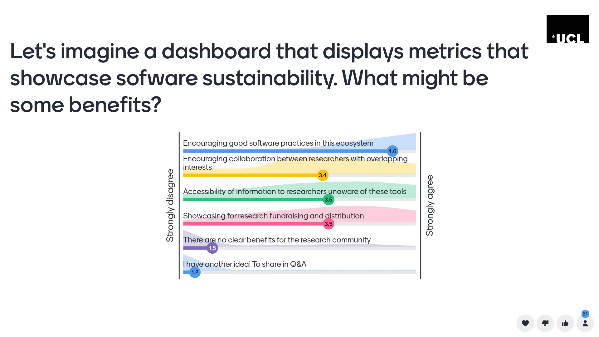
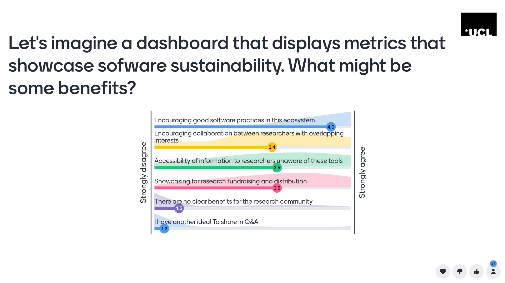
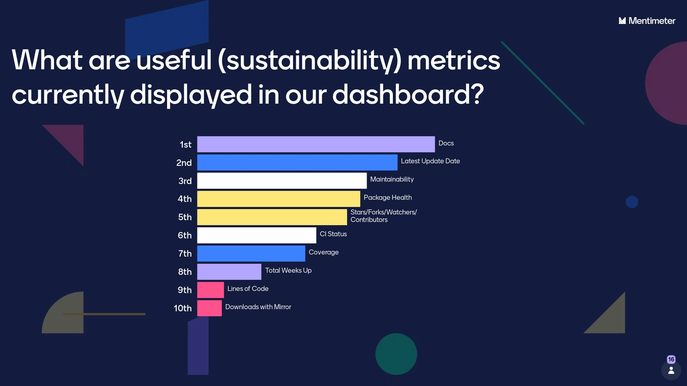
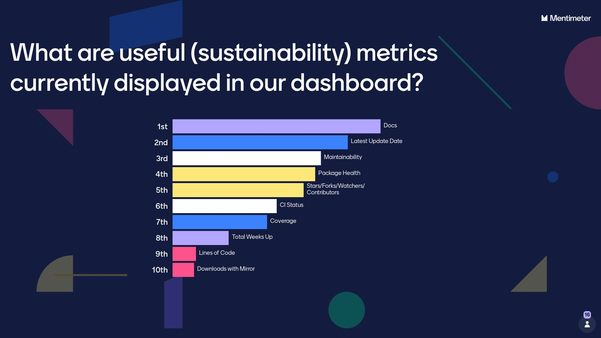

Stephen Thompson, Yagmur Idil Ozdemir, Miguel Xochicale, Tom Couch, Thomas Dowrick, Matthew J Clarkson
The project funded the ongoing development of the software sustainability dashboard for SciKit-Surgery and the creation of a broader template dashboard that anyone can use for their own projects.
SciKit-Surgery brings together a set of libraries targeted to support research in image guided surgery. In September 2021 we presented SciKit-Surgery at SeptembRSE and at WEISS's annual funder's review. We realised that although we intend to follow sustainable software best practice on our individual libraries we had no tool to enable us to track the status of all the libraries in the project. We couldn't find a ready made tool, so we made our own, a "Sustainable Software Dashboard". The dashboard was fit for purpose at the time, but had no auto update feature, so got out of date very quickly.
The Open Source Software Sustainability funding enabled us to fund a research software engineer to improve the automation of the dashboard, so it now updates every 12 hours using Github actions.
The updated dashboard enables us to see at a glance:
With this knowledge we are much better placed to focus future development work and make a case for ongoing funding.
In addition to automating the dashboard the team took the opportunity to engage with the research software engineering community to ask whether the dashboard could be more broadly useful, and if so what features were of most interest to the community.
 

Our presentation at RSLondonSoutheast gave us confidence that the dashboard was of wider interest to the community, so we developed a template dashboard enabling users to quickly create their own dashboard. We presented the template as part of a 90 minute workshop at RSECon23 in Swansea to an audience of around 30 research software engineers from academia and industry. You can find a full description of the workshop including slides, aims, and agenda here.
 

Participants at the workshop were able to use our template to create their own dashboards and participated in a discussion on what constitutes sustainable software and what features they would like to see on a dashboard.
Over the course of RSLondonSoutheast and RSECon23 we surveyed around 70 researchers and research software engineers from academia and industry. We asked them general questions about software sustainability and specific questions about our dashboard. We're still processing the results for full publication but in summary:
The funding from ARC enabled us to develop our template and demonstrate its potential usefulness for the wider community. The template dashboard remains freely available at https://github.com/SciKit-Surgery/sustainable-pkg-stats along with instructions for its use. We're continuing to use it for SciKit-Surgery and engaging with the community to improve it and make it more widely applicable.
The development of sustainable practice in research software engineering is a topic of growing interest and we intend to use the results of our work for a publication in the area of best practice for sustainability in software engineering.
This work was made possible by UCL's Advanced Research Computing Centre through the Open Source Software Sustainability funding scheme and the Wellcome/EPSRC Centre for Interventional and Surgical Sciences (WEISS) (203145Z/16/Z).
Ozdemir, Yagmur Idil, Xochicale, Miguel, & Thompson, Stephen. (2023). Design and discussion of a (reusable) Sustainability Dashboard of Open Source Tools (1.0). RSLondonSouthEast, London, UK. Zenodo. https://doi.org/10.5281/zenodo.8337573
Ozdemir, Yagmur Idil, Xochicale, Miguel, & Thompson, Stephen. (2023). How to use and contribute to a software sustainability dashboard (1.0). RSE Conference 2023 (RSECon23), Swansea UK. Zenodo. https://doi.org/10.5281/zenodo.8337480